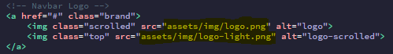
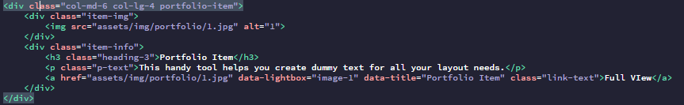

Porta is a one page website Template built on the Bootstrap 4 framework.
Thank you for purchasing Porta! These docs provide usage instructions for the various components built into the theme. If you run into any other problems with the template, or encounter any bugs, please contact through the contact form on my profile page.
In the the navbar there is two logos, one logo is at the top of the banner, that logo is white and thats because of the contrast, and the other logo appear when scrolled. There is a class that will help you make the difference between the two, All you have to do is change the source.
In the portfolio section you will find a div with a class of portfolio-item, this last one contain all of the items content:
If you run into problems, bugs, or have general questions about the template, please feel free to email me and I will attempt to answer your questions.You can also contact me , email: dbzbakhtari@gmail.com
Once again, thank you for choosing Porta, and I wish you the best of luck on many projects to come!